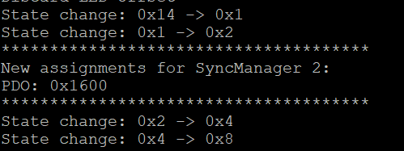

As described before, the SyncManager assignment and PDO mapping settings can be changed by the EtherCAT Master during the transition from PreOP to SafeOP.
Register Process Data configuration change callbacks
In order to get notifications of any mapping or assignment change, use the register functions.
void EC_API_SLV_PDO_registerMappingChanges(EC_API_SLV_SHandle_t *pEcSlaveApi_p, void *pContext_p, EC_API_SLV_PDO_CBMappingChanges_t cbFunc_p)
Register callback for PDO mapping changes.
Definition ecSlvApi_ProcDataStub.c:726
void EC_API_SLV_PDO_registerAssignmentChanges(EC_API_SLV_SHandle_t *pEcSlaveApi_p, void *pContext_p, EC_API_SLV_PDO_CBAssignmentChanges_t cbFunc_p)
Register callback for PDO assignment changes.
Definition ecSlvApi_ProcDataStub.c:674
Apply new configuration to the device
If the process data configuration is changed by the user, to apply those changes, it is necessary to reload the devices in TwinCAT.
Reaload devices button
td |
Reaload devices in menu
|
td |
Assignment changes callback
If the assignment change setting is enabled and the assignment callback registered, then the SDK informs the application about the changes requested by the Master.
Assignment change callback from Slave Simple example

td |
New assignment reflected in the Object Dictionary
td |
Accept or refuse SyncManager assignment changes
The syncManager assignment change request can be refused from the application. To do so, use an error code different to EC_API_eERR_NONE.
uint32_t EC_SLAVE_APP_assignmentChangedHandler(void* pContext_p, bool rx_p, uint8_t count_p, uint16_t* pPdoIndexArray_p)
{
}
@ EC_API_eERR_ABORT
Definition ecSlvApi_Error.h:51
Application refuses to transit to SafeOP and reports an AL Status Code error.
td |
PDO changes callback
If the PDO mapping is not fixed and the mapping changes callback registered, then the SDK informs the application about the changes requested by the Master.
Mapping change callback from Slave Simple example
td |
New mapping reflected in the Object Dictionary
td |
Accept or refuse PDO mapping changes
The PDO mapping change request can be refused from the application. To do so, use an error code different to EC_API_eERR_NONE.
uint32_t EC_SLAVE_APP_mappingChangedHandler(
void* pContext_p, uint16_t pdoIndex_p, uint8_t count_p,
EC_SLV_API_PDO_SEntryMap_t* pPdoMap_p)
{
}
EC_SLV_API_PDO_SEntryMap_t describes the EtherCAT Slave API.
Definition ecSlvApi.h:118
Application refuses to transit to SafeOP and reports an AL Status Code error.
td |


 1.9.7
1.9.7